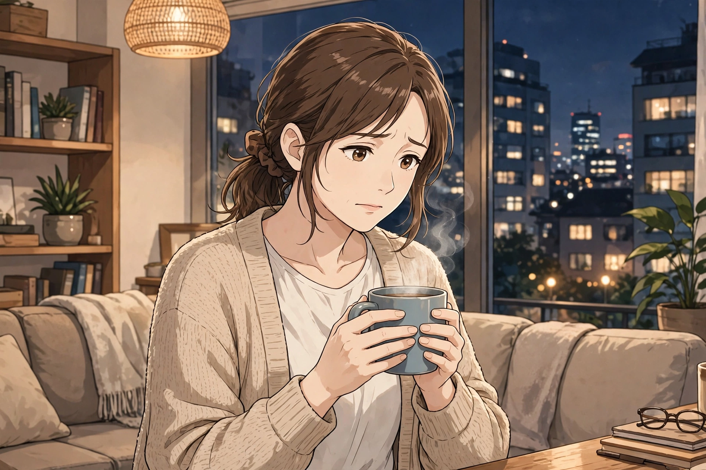

難波で梅雨入り前に気になる湿気と冷え感｜要因の整理とセルフケア、受診の目安梅雨入り前の湿気と冷え感

6月を前に、難波の空気は梅雨の気配を含み始めます。なんばウォークの地下では冷房のひんやりした空気が頬に触れ、地上へ上がれば道頓堀のあたりの蒸した空気が体を包みます。心斎橋筋で汗ばんだまま冷房の入った店内に入ると、濡れた背中がすっと冷えます。そんな一日のあと、手足の先が冷たく感じたり、体が重だるく感じたりしませんか。ここでいう冷え感は、手足の先が冷たく感じられることや、体全体がひんやりと感じられること、汗をかいたあとに体が冷えたように感じることなど、日常的な感じ方のことです。医学的な診断名ではありません。このコラムでは、梅雨入り前に湿気と冷え感が重なりやすいわけ、蒸し暑い時期の過ごし方とセルフケア、医療機関への相談を考える目安をお伝えします。
#難波 梅雨入り前 湿気 冷え感#梅雨入り前 冷え感#湿気 冷え感 セルフケア#難波 女性専用 サロン 冷え
１．冷え感の感じ方は人それぞれ——梅雨入り前の湿気の中で
冷え感の感じ方は人によって違います。指先だけが冷たく感じられる人もいれば、体全体がひんやりとして重だるく感じられる人もいます。汗をかいたあと、急に体が冷えたように感じる人もいます。冷え感の一般的なとらえ方については、冷えの症状ページでも紹介しています。
梅雨入り前の冷え感は、ひとつの場面だけで生まれるわけではありません。湿気の高さ、汗のかき方、冷房の入った場所との出入り、服装の選び方が重なり合って表れ方が変わります。
２．湿気と冷え感が重なりやすい、難波での初夏の過ごし方
梅雨入り前に湿気と冷え感を同時に意識しやすくなるのは、理由がひとつに絞れないからです。難波で過ごす初夏の一日を例に、背景を整理します。
- なんばウォークから地上へ上がるたびに：地下街はひんやりと涼しいのに、階段を上がった先は蒸し暑い空気が広がっています。温度の違う場所を行き来すると、体の温度の感じ方がゆらぎやすくなります
- 道頓堀・心斎橋筋のにぎわいの中で：人の流れにまじって歩くと、気づかないうちに汗をかいています。そのまま冷房の入った店内に入ると、汗で湿った肌が冷えた感じがします
- 冷房が入り始めた店や電車の中：梅雨入り前から冷房を入れる店や電車が増えます。冷えた空間に長くいると、手足の先から冷たさを感じる方もいます
- 湿度が高い日の汗の乾きにくさ：湿度が高い日は汗がなかなか乾きません。肌に残った汗が、体の冷えた感じにつながることがあります
- 雨の前日の蒸し暑さ：雨が降る前日は、気温も湿度もぐっと上がります。蒸し暑い中で汗をかいたあと、冷え感と重だるさが同時に意識されることもあります
- 朝晩と日中の気温差：朝晩は涼しく、日中は蒸し暑い日が続きます。薄着で出かけた日に冷房の入った場所へ入ると、冷え感を意識しやすくなります
体の状態そのものや、ほかの体の状態が関係している場合もあります。「湿気のせいだろう」と自分だけで決めつけず、長く続くときは医療機関で確認しましょう。
３．蒸し暑い日をどう過ごすか——梅雨入り前のセルフケア
梅雨入り前のセルフケアで大切なのは、汗をかいたあとに体を冷やしすぎないことと、湿気の高い日の過ごし方です。
- 歩いたあとの汗はこまめに拭き取る：道頓堀や心斎橋筋を歩いたあとは、タオルで汗を拭き取りましょう。濡れたままの服で冷房の入った場所に長くいるのは避けましょう
- 薄手の羽織るものをバッグに一枚：なんばウォークなど冷房の入った地下街へ入るときに備え、薄手の羽織るものを一枚持っておくと、手足の冷たさを感じにくくなります
- 冷たい飲み物ばかりにしない：蒸し暑い日は冷たい飲み物が欲しくなりますが、続けて取ると体が冷えた感じがすることがあります。常温の水や温かいお茶を間に挟む方もいます
- 一日の終わりはぬるめのお湯で：汗をかいた日は、ぬるめのお湯にゆっくりつかって体を温めましょう。湯船に入れない日は蒸しタオルを首や足首に当ててみましょう
- 足首・首まわりを冷やさない工夫：足首や首まわりが出る服装の日は、冷房の入った場所で覆えるものを用意しましょう
- 室内でこまめに体を動かす：湿気の高い日は外出を控えがちですが、室内で背伸びや肩回し、かかとの上げ下げなど、小さな動きを取り入れましょう
- 湿気の日の体調を簡単にメモする：「蒸し暑い日はどうだったか」を手帳に書き留めると、ご自身のパターンに気づけます
雨の日の体のだるさは、コラム「難波で雨の日に気になる体のだるさ｜低気圧の日の過ごし方とセルフケア、受診の目安」もあわせてご覧ください。朝の冷え感は、コラム「難波で朝に気になる冷え感｜起き抜けの過ごし方とセルフケア、受診の目安」も参考にしてください。
セルフケアは無理のない範囲で行うことが前提です。体調がすぐれない日や痛み・腫れが気になるときはセルフケアを控え、まず医療機関への相談をご検討ください。
４．こんなときは医療機関への相談を
次のような場合は、セルフケアより先に、医療機関への相談をご検討ください。
- 冷え感が数週間以上続いていて、日常生活に支障が出ている
- 手足の冷え感とともに痛みやしびれが強くなってきている
- 脚にしびれがあったり、力が入りにくい感じがあったりする
- 発熱や体重の変化とあわせて、冷え感が続いている
- 温めても冷え感が変わらず、だるさや動悸とともに続く
冷え感の背景には、医療機関での確認が必要な状態が隠れていることもあります。気になる状態が続くときは、自己判断で様子を見続けず、かかりつけ医や医療機関に相談してください。
５．ステラシリウス（難波）のご案内
ステラシリウスは、大阪市浪速区幸町1-2-9 RE-005 502号（JR難波駅 徒歩5分）にある女性専用サロンで、現在営業中です。料金はオイルマッサージ＋美容整体の90分コース10,000円（税込）のみ、営業時間は月〜土17:00〜22:00／日曜12:00〜22:00、完全予約制です。施術室はシャワー完備の完全個室で、施術の前後にシャワーをご利用いただけます。当店では鍼灸施術は行いません。
ご来店後は、まずカウンセリングで当日の体調と気になる部位をうかがい、ご希望の方はシャワーで汗を流してから施術着にお着替えいただきます。美容整体で体のバランスを整えたあと、オイルマッサージで全身をほぐします。施術後はシャワーでオイルを洗い流してゆっくりお支度いただき、最後にアフターカウンセリングで体の状態とセルフケアのポイントをお伝えします。ご予約はLINE公式アカウントから承っています。梅雨入り前の湿気と冷え感が気になるときは、無理のない日程でご相談ください。